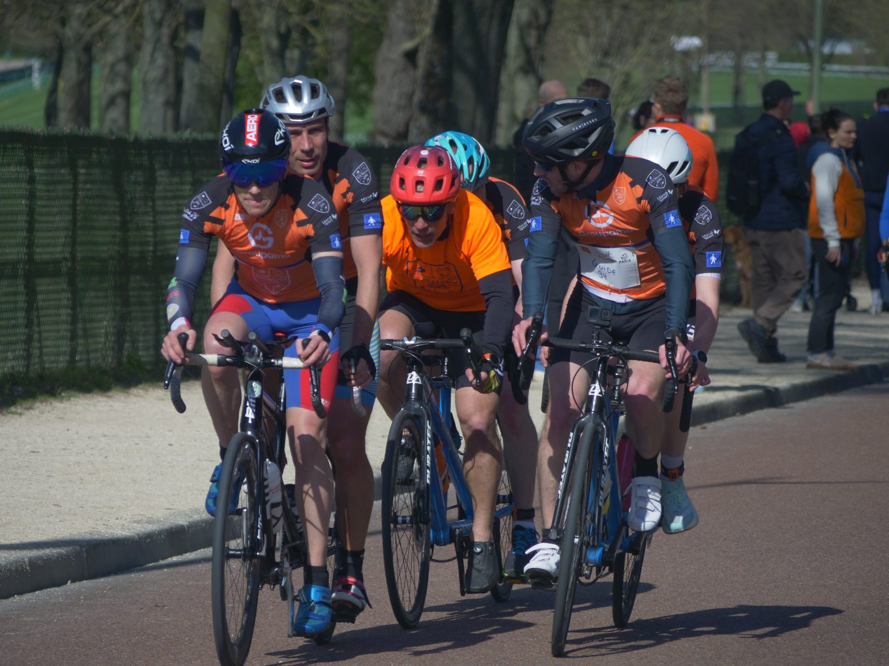

Ludovic
Bureau de l'association
Membre du bureau, impliqué dans la coordination des activités et l'accompagnement des duos.
Accueil › Qui sommes-nous ?
Une association loi 1901, un club sportif affilié à la Fédération Française Handisport, et surtout une équipe de bénévoles passionnés.
Notre histoire
A2CMieux — « Association pour Cyclisme, Course, Mieux » — est née de la conviction que le sport doit être accessible à toutes et à tous. Club sportif affilié à la Fédération Française Handisport, l'association a pour objet de favoriser toute activité sportive ou de loisir type multisport organisée par ou pour des personnes atteintes de déficience visuelle, grâce à la formation de Duos Sportifs.
Nous accompagnons chaque personne, quels que soient son niveau, ses besoins et son projet, pour découvrir, débuter, s'entraîner ou se perfectionner.

L'équipe
Le bureau et les bénévoles font vivre l'association au quotidien : organisation des créneaux, formation des guides, événements et vie du club.
Bureau de l'association
Membre du bureau, impliqué dans la coordination des activités et l'accompagnement des duos.
Bureau de l'association
Membre du bureau, engagé dans l'organisation des sorties et la vie du club.
Bureau de l'association
Membre du bureau, active dans l'animation de la communauté et l'accueil des nouveaux membres.
Guide historique
Guide historique de l'association, présent depuis les débuts pour accompagner les duos et transmettre son expérience.
Guide bénévole · Communication
Guide bénévole, il aide notamment sur la communication de l'association pour la faire rayonner.
Composer des binômes harmonieux et ne jamais laisser quelqu'un de côté.
Rendre le sport possible pour toutes et tous, gratuitement pour les participants.
Accompagner chacun vers son propre objectif, du loisir à la compétition.
Que vous soyez déficient·e visuel·le, guide bénévole ou simplement motivé·e, il y a une place pour vous chez A2CMieux. Le sport, ça se vit mieux à deux !